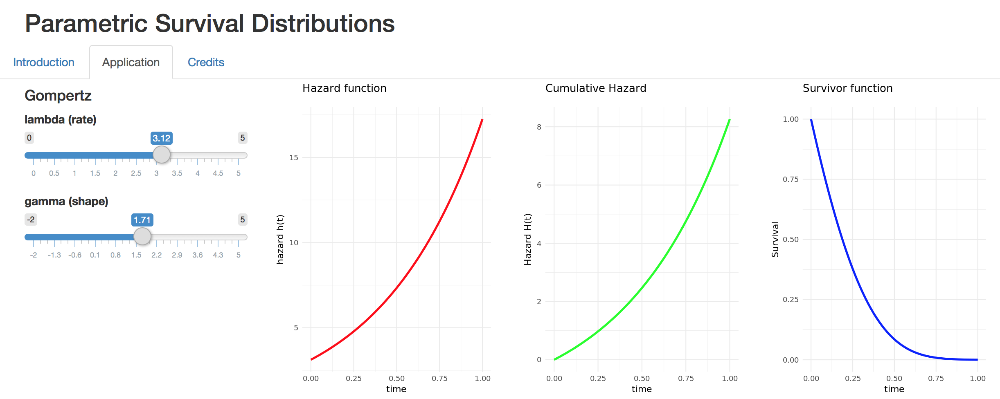

Aplicaciones
Las siguientes aplicaciones están desarrolladas con R y shiny.
- iDEAL Granada: Aplicación basada en web-scraping para visualizar noticias del periódico IDEAL, con código abierto, y menos de 60 líneas.

Desarrollo también aplicaciones de contexto científico, como co-autor junto a Miguel Ángel Luque-Fernández.
- Expected date of delivery: Aplicación web que calcula la fecha estimada de un parto y crea un enlace con acontecimientos importantes que ocurrieron ese día.

- Parametric Survival Distributions: Aplicación web para visualizar distintas características (riesgo, riesgo acumulado y función de supervivencia) de las distribuciones paramétricas más populares para modelar datos de tiempo hasta un evento.

- Collider: Aplicación web que ilustra con fines educacionales un concepto de inferencia causal: el collider o colisionador, mediante un ejemplo concreto: la relación edad-consumo diario de sodio-proteinuria-presión arterial sistólica.